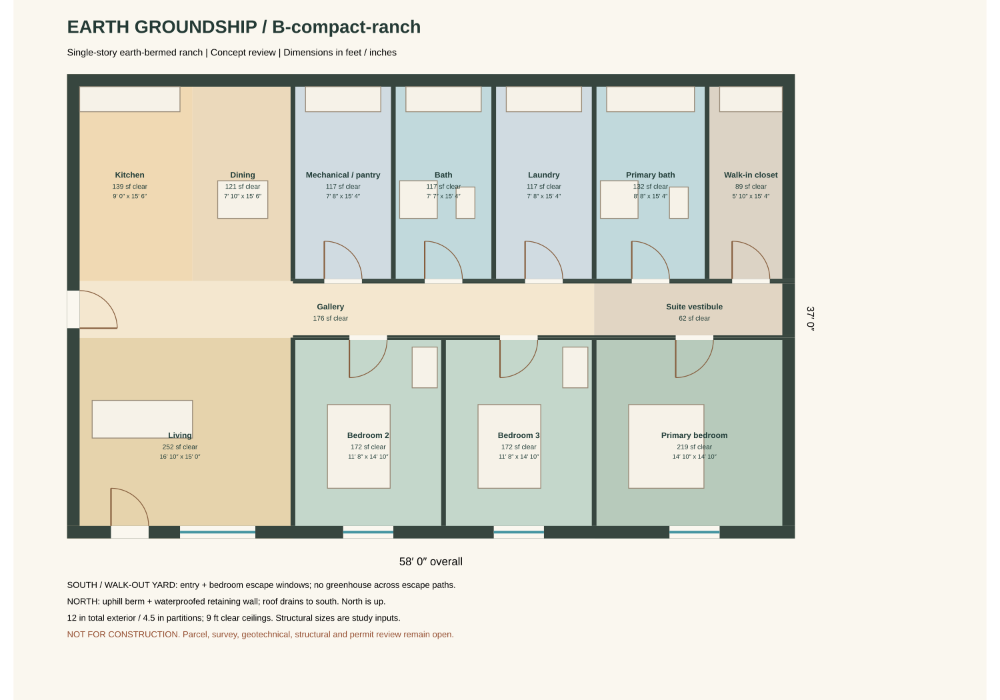
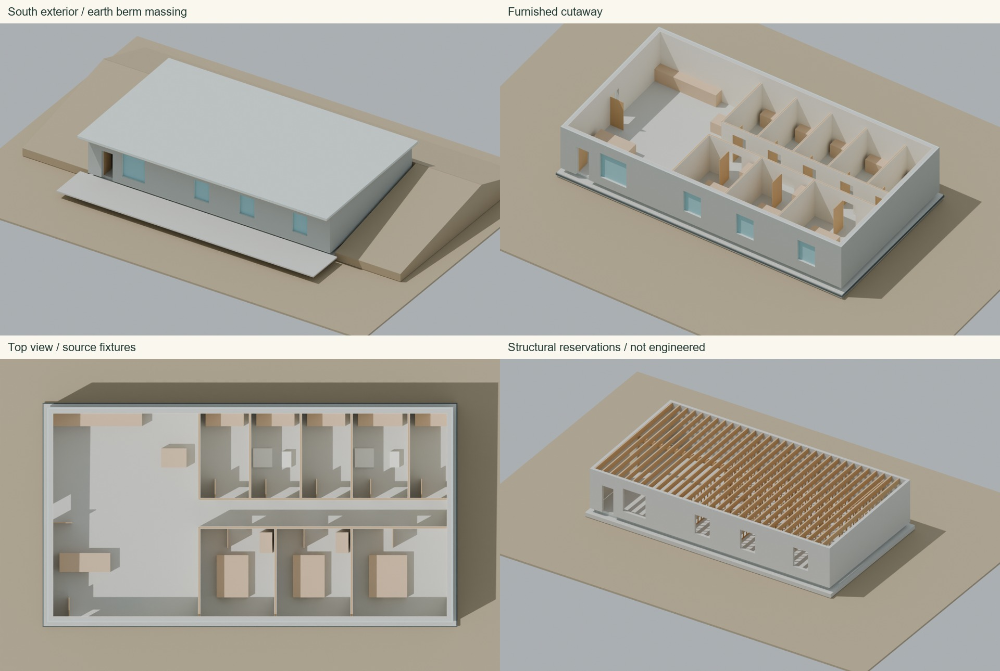

A · Long ranch — selected
64′ × 34′ · 2,176 sf enclosed · approximately 1,914 sf clear floor. Wider living, kitchen and dining zones. Area excludes patio and earth berms.
 Room schedule
Room scheduleDesign overview · US materials and cost breakdown · Portal, Arizona · concept study · November 2, 2026
Three bedrooms / two bathrooms. A south walk-out face gives every bedroom its own direct escape opening to the yard. The north service band sits against the berm. A lightweight roof is the baseline; soil over the roof requires separate engineering.
64′ × 34′ · 2,176 sf enclosed · approximately 1,914 sf clear floor. Wider living, kitchen and dining zones. Area excludes patio and earth berms.
Room schedule58′ × 37′ · 2,146 sf enclosed · approximately 1,885 sf clear floor. Shorter circulation, deeper rooms and narrower public zones.

Room schedule

Play the 14-stage construction reveal · Full-resolution top view
A was selected by the user on November 2, 2026. Assemblies remain conceptual. Footprint area includes walls; clear floor excludes wall bands and conservatively excludes door thresholds. Current county code adoption is 2024 IRC / 2023 NEC / 2012 IECC with local amendments. Parcel and engineering inputs remain open.
Code and site basis · Blender construction study · Material takeoff